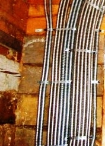

Качественный электромонтаж в Санкт-Петербурге и ленобласти, стаж 12 лет. Частный электрик, недорого и качественно.
Тел. 8 904 642 08 57 Николай.

Поиск обрыва проводки и другие услуги частного электрика!
Одной из наиболее распространенных проблем среди владельцев загородных домов, квартир, дач и офисов становится поиск обрыва проводки. Работа требует профессионализма и опыта мастера, и практически невозможна без наличия специального инструмента и оборудования. Самостоятельные попытки найти и локализовать место обрыва, осуществить ремонт электропроводки часто заканчиваются неудачей. Тогда становится актуальным вызов профессионального электрика на дом.
Уже не первый год я оказываю все виды услуг, связанные с монтажом и ремонтом электросетей:
- подготавливаю проект электромонтажных работ;
- осуществляю электропроводу в доме, квартире, на даче, в офисе;
- диагностирую состояние электрики, быстро нахожу место повреждения проводки и выполняю ее ремонт;
- устанавливаю розетки, выключатели;
- подключаю бойлер, кондиционер, кухонную вытяжку и любую бытовую технику;
- устанавливаю автомат защиты;
- выполняю монтаж осветительных приборов, занимаюсь устройством уличного освещения.
Обрыв проводов.
Говоря о сети в 220 Вольт, мне приходится сталкиваться с двумя вариантами проблем: обрыв фазы и нуля. Гораздо более сложным становится устранить обрыв нуля, поскольку уровень напряжения в розетках будет "скакать", приводя в неисправность все электроприборы. Повреждения бывают нескольких видов: однофазное, междуфазное повреждение, разрыв жил, нарушения внешней оболочки кабеля. Современные методы поиска позволяют выполнить это быстро (в течение нескольких часов), избежав более серьезных последствий - короткого замыкания, возгорания.
Поиск обрыва проводки, монтаж которой осуществлялся скрытым способом.
Стоит сказать, что поиск обрыва проводки, монтаж которой был осуществлен открытым способом, не требует особого профессионализма. Обрыв видим глазу, и главной задачей становится ремонт электропроводов. Что же касается скрытой проводки, то здесь задача усложняется. Только при наличии специального оборудования - трассоискателя - возможно быстро и со 100% гарантией найти место повреждения. Прибор устроен так, что поиск повреждения провода осуществляется с помощью бесконтактного индикатора. С таким прибором можно работать с любым материалом, из которого построен дом: кирпич, бетон, дерево.
Осуществив вызов электрика вы получите возможность:
- Выполнить диагностику всей поверхности, за которой скрыта проводка.
- Быстро и с гарантией найти место обрыва.
- Проверить исправность розеток.
- Определить какой из проводников поврежден – фазный или «нулевой».
- Выполнить ремонт электропроводки.
Наличие необходимого оборудования и расходного материала позволяют выполнить работу быстро и без потери качества. На все оказанные услуги предоставляется гарантия. Добросовестное отношение к заказу, приятные цены и желание оставить каждого клиента довольным моей работой позволило со многими заказчиками работать на постоянной основе, рекомендовать меня своим близким. Консультация - бесплатна, а выезд на дом будет осуществлен в самые короткие сроки.
Я буду рад оказаться вам полезным! Звоните по номерам телефонов, которые указаны выше.

Вызов мастера по кондиционерам
Сколько будут стоить материалы.
Электрика в бане в медной трубе - цены.

Расценки на электропроводку квартир.
Сколько стоит замена электропроводки в двухкомнатной квартире?.